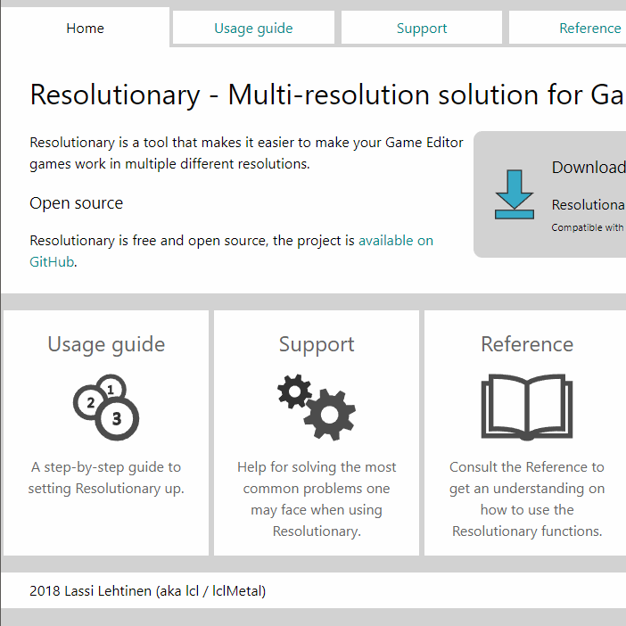

Portfolio
Ohjelmointi
Näytteitä ohjelmointiprojekteistani.
Viimeisimpiä GitHubissa julkiseksi asettamiani projekteja (SABRE & GEUI) en ole vielä lisännyt tänne omiksi sivuikseen mutta niiden repositoriot ovat kuitenkin näkyvissä GitHubissa.
GitHub-tilini
SABRE
SABRE on pseudo-3D -moottori ja kenttäeditori, toteutettu Game Editor ‑ohjelmalla.
SABRE GitHubissa
GEUI
GEUI on käyttöliittymäohjelmointikirjasto Game Editor ‑ohjelmalle.
GEUI GitHubissa
Resolutionary
Resolutionary on sapluunaprojekti Game Editor ‑ohjelmalle. Sen tarkoitus on tehdä peleistä automaattisesti resoluution mukaan skaalautuvia.
Lue lisää
CTR - Custom Text Renderer
Myös CTR on sapluunaprojekti Game Editor ‑ohjelmalle. Sen tarkoitus on helpottaa tekstielementtien käyttöä peleissä.
Lue lisää
Software3D
Software3D on vielä keskeneräinen alkeellinen 3D-moottori Game Editorille.
Lue lisää
Programming
Samples of my programming projects.
I haven't yet added dedicated pages to my most recently published projects (SABRE & GEUI) but their GitHub repositories are available for viewing.
My GitHub
SABRE
SABRE is a pseudo 3D engine and level editor created in Game Editor.
SABRE on GitHub
GEUI
GEUI is a graphical user interface library for Game Editor.
GEUI on GitHub
Resolutionary
Resolutionary is a template project for Game Editor. Its purpose is to make games automatically scale to different resolutions.
Read more
CTR - Custom Text Renderer
CTR is another template project for Game Editor. Its purpose is to make it easier to use text elements in games.
Read more
Software3D
Software3D is a simplistic work-in-progress 3D engine implemented in Game Editor.
Read more

WWW-sivut
Näytteitä tekemistäni WWW-sivuista.
Resolutionaryn dokumentaatio
Dokumentaatiosivut ohjelmointiprojektilleni Resolutionarylle.
Sivusto on toteutettu responsiivisesti, ja se on testattu ja todettu toimivaksi tietokoneella Chromella, Firefoxilla, Internet Explorerilla, Edgellä, Operalla ja Safarilla,
sekä puhelimella Samsung Internetillä, Chromella, Firefoxilla ja Operalla.
Resolutionaryn dokumentaatio
Web design
Samples of my web design projects.
Resolutionary documentation
Documentation website for my programming project, Resolutionary.
The site implementation is responsive and tested to be working on PC with Chrome, Firefox, Internet Explorer, Edge, Opera and Safari as
well as on mobile with Samsung Internet, Chrome, Firefox and Opera.
Resolutionary documentation
Grafiikka
Näytteitä tekemästäni grafiikasta. Näytillä olevat kuvat ovat Inkscapella ja / tai GIMP:llä tehtyjä.
GIMP:llä olen lähinnä hienosäätänyt netistä löytämiäni levyjen kansikuvia saadakseni
mediakirjastooni mahdollisimman hyvät kuvat kaikista omistamistani albumeista. Muokkaamiani
kansikuvia en kuitenkaan jaa tänne, koska en niitä omista.
Galleriaan
Graphics
Samples of my work with digital graphics. All pictures in the gallery are made with Inkscape and / or GIMP. I've also used
GIMP to adjust album cover images for CDs I own so that my media library can have the best possible images of
every album I own. Unfortunately I can't show those pictures here because of copyright issues.
Open gallery